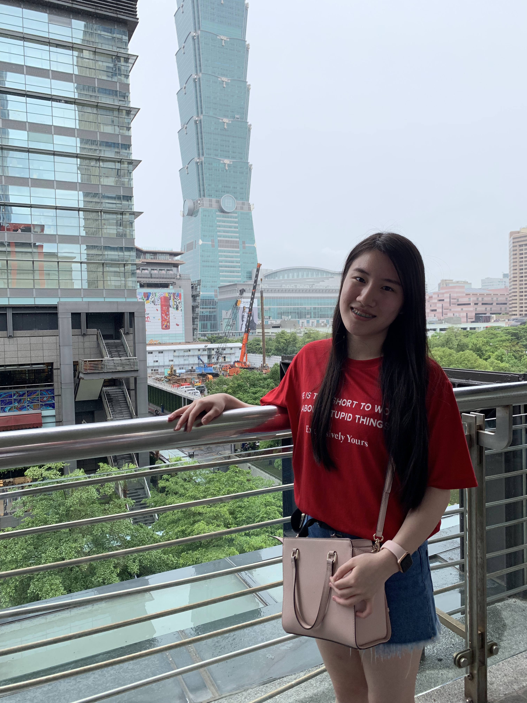
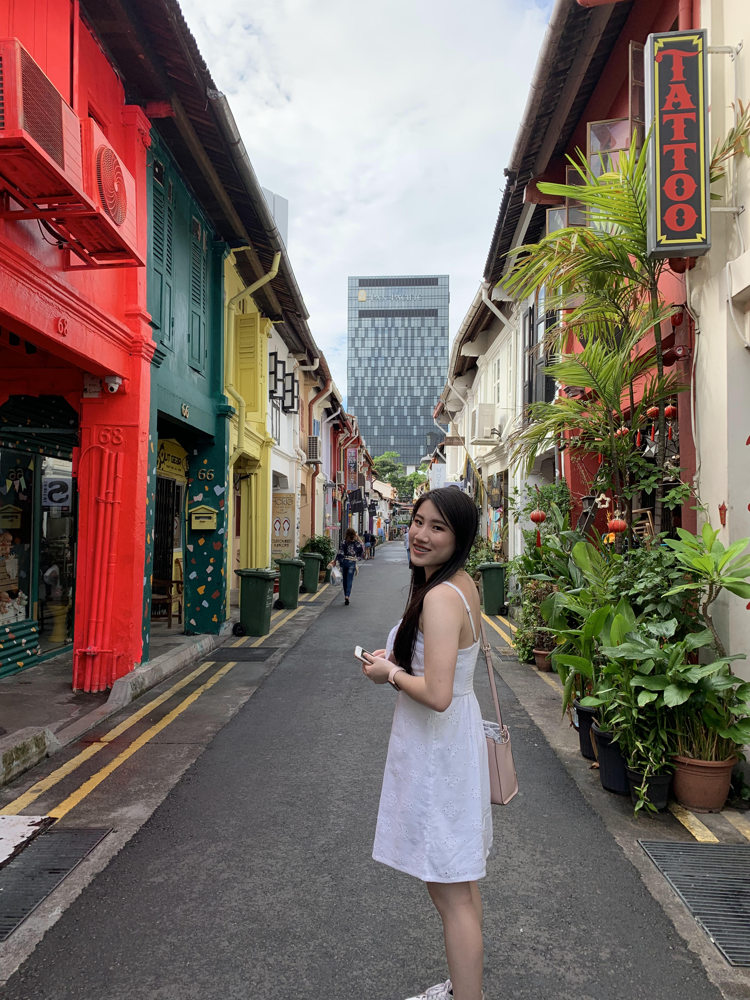
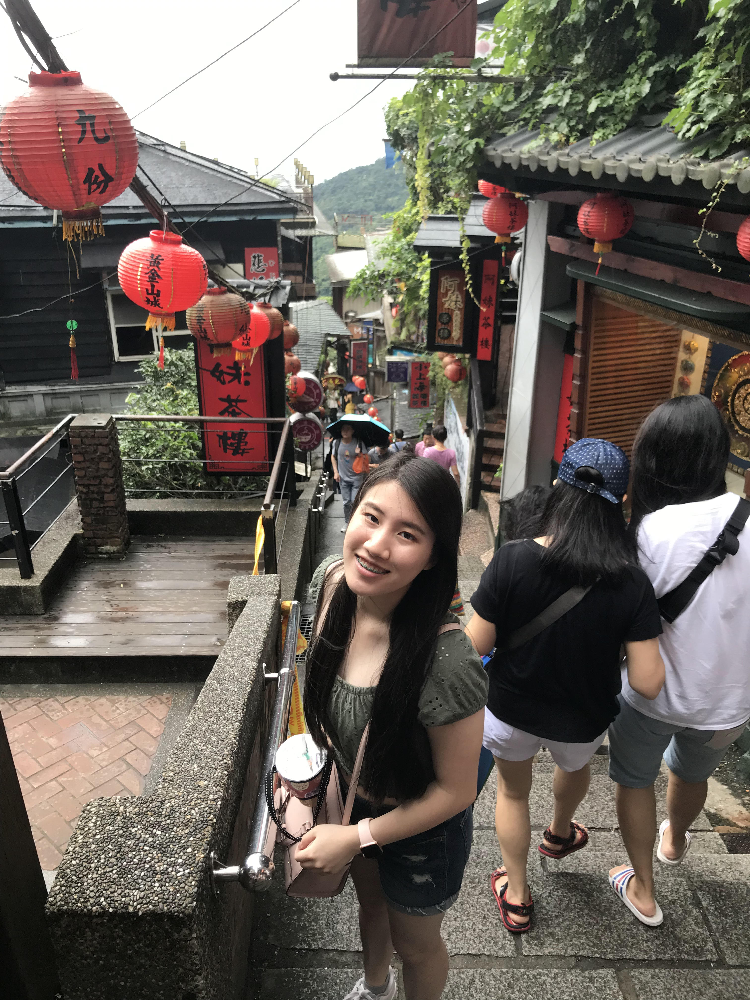

Megan's Travel Blog

Last summer, I traveled to Taiwan and Singapore. I decided to step out of my comfort zone and to try something new. So I went scuba diving, paragliding, and hot air balloon riding. It was thrilling and exciting. After years of sedentary lifestyle and constant studying, it was refreshing to be able to enjoy nature and feel the adrenaline rushing. The summer showed me different perspectives of the world and made me aware of the importance of promoting sustainability.
Some picture of me next to Taipei 101, standing in a street filled with murals in Singapore, and jiufen, a place that inspired Spirited Away.
  